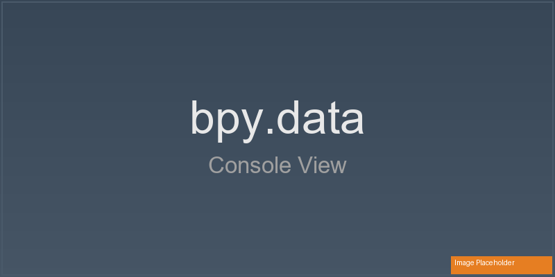
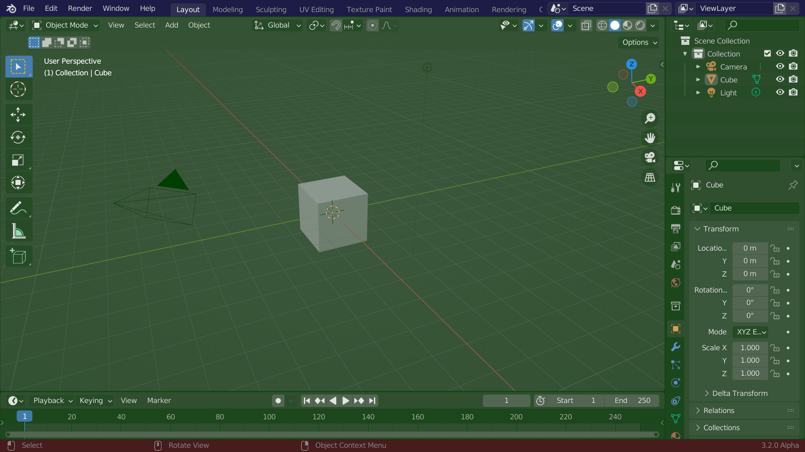

Glossary¶
Key Blender and PME terms for new users and anyone looking to understand the concepts in more depth.
Basic Blender concepts¶
Data (bpy.data)¶
Access to the data stored in a Blender file (.blend), organized into collections such as bpy.data.objects and bpy.data.materials. This is a database-like view: access an item directly by name or index.
bpy.data.objects['Cube'] # A particular object
bpy.data.materials.new("Gold") # Create a material
bpy.data.meshes[0] # Access by index
obj = bpy.data.objects.get('Cube')
if obj: obj.location.x += 1.0
{kind=link}

Using bpy.data in Blender’s Python Console.¶
Reference: Data Access (bpy.data), bpy.types.BlendData.
Context (bpy.context)¶
Dynamic references that reflect the user’s current working state: selected objects, active tools, current mode, the area under the mouse, and other information that changes during interaction.
The same shortcut can do different things in the 3D Viewport and Shader Editor because each area supplies a different context.
bpy.context.object # Current active object
bpy.context.selected_objects # All selected objects
bpy.context.mode # Current mode (OBJECT, EDIT_MESH, etc.)
bpy.context.area.type # Current area type
# Advanced: override the context to run an operator in a particular area
area = next(a for a in bpy.context.window.screen.areas if a.type == 'VIEW_3D')
with bpy.context.temp_override(area=area):
bpy.ops.view3d.view_selected('INVOKE_DEFAULT')

Using bpy.context in Blender’s Python Console.¶
Reference: Context.
Data and Context
Use
bpy.datato list all materials or operate on an object with a particular name.Use
bpy.contextto act on selected objects or change the UI according to the current mode.
bpy.data describes what exists. bpy.context describes what is happening now. The former provides database-like access; the latter is closely tied to interaction with the user interface.
Operator (bpy.ops)¶
A unit of action in Blender. Operators cover major operations such as adding objects and beveling, as well as small UI actions such as rearranging list items.
Assignable to hotkeys.
Available as menu items or buttons.
Callable from Python scripts.
Usable in macros.
PME’s Macro Operator and Modal Operator editors let you combine operators into custom tools.
Example: bpy.ops.mesh.subdivide().
Poll Method¶
An operator or panel’s Poll function reads the context to decide whether the feature can be used now.
Keymap¶
A collection of hotkey assignments for an editor type or editing mode. For example, G moves objects in Object Mode and selects Grab in Sculpt Mode. PME lets you customize these assignments for your workflow.
Reference: Keymap.
Property¶
A data value such as object location or a material setting. Properties typically appear as sliders, checkboxes, and fields in the UI.
With PME, you can:
Display and edit properties in menus or panels.
Read them in scripts and Poll functions.
Add custom properties with the Property Editor.
Example: bpy.context.object.location.
Mode¶
Blender’s operational state, such as Object Mode or Edit Mode. Each mode has its own tools and actions. PME’s Poll can limit the availability of tools or menus according to the active mode.
Example: bpy.context.mode == 'EDIT_MESH'.
Interface structure¶
{kind=link}

Blender’s default screen layout.¶
Area¶
A large region of the Blender interface occupied by an editor, such as the 3D Viewport or Outliner.
PME’s Toggle Side Area splits the area where it runs and opens or closes a temporary editor area beside it. Toggle Sidebar instead shows or hides a region inside the same area.
Areas contain subregions called Regions, such as toolbars and sidebars.
Related: Region, Window, Workspace. Reference: Area.
Region¶
A subdivision of an Area containing particular UI elements, such as tools or properties.
PME’s Panel Group adds custom content to a region.
A Sidebar is a region within an area, not a separate editor area.

3D Viewport regions, including the header, toolbar, and sidebar.¶
Related: Area, Panel. Reference: Region.
Header¶
The horizontal bar at the top or bottom of an area, usually containing menus and frequently used tool controls.

A 3D Viewport header.¶
PME can add custom buttons to a header with Menu/Panel Extension.
Related: Region. Reference: Header.
Panel¶
A collapsible group of UI controls, commonly found in a sidebar or the Properties editor.

Panels in a sidebar.¶
PME can create panels, extend existing panels, group them, and hide unused panels.
Related: Property, Region. Reference: Panel.
PME concepts¶

Pie Menu Editor overview.¶
Slot¶
An individual item inside a menu. A slot can execute a command, display or edit a property, invoke another menu, or draw a custom layout.
Related: Command, Property, Menu, and Custom tabs.
Command Tab¶
The Slot Editor tab for Python code and direct operator calls. Use it for single-line scripts, custom function calls, variables, and operators.
Example: C.active_object.location.x += 1.0.
Custom Tab¶
The Slot Editor tab for defining a custom UI layout using drawing code.
L.box().label(text="Custom Layout")
Interactive Panels Mode¶
A PME mode that adds PME tool controls to Blender UI elements. These controls help identify menu IDs, configure panel extensions, and customize the UI. They are also useful for discovering how Blender’s menus and panels are organized.
Macro Operator¶
Runs multiple operators in sequence. PME’s Macro Operator Editor records operator sequences, adjusts their parameters, and manages execution flow, letting you combine a workflow into one invocation.
Modal Operator¶
An interactive operator that continues responding to user input. PME’s Modal Operator Editor supports mouse movement, key events, state changes, and real-time feedback to build custom interactive tools.
Slot Editor¶
The interface that defines the behavior of PME menu items and buttons. Its tabs include:
Command: execute code.
Property: display a property.
Menu: invoke another PME menu.
Hotkey: invoke a shortcut.
Custom: draw a custom layout.

The Slot Editor interface.¶
The graphical controls let you configure many operations without writing scripts.
Advanced concepts¶
Event System¶
Blender’s input handling mechanism tracks keyboard and mouse events. Modal operators, custom hotkeys, and interactive tools use this information.
E.ctrl and E.shift and message_box("Ctrl+Shift Pressed")
Layout System¶
Blender’s system for arranging UI elements. PME uses it to place labels, buttons, property fields, operators, and custom controls in a layout hierarchy.
L.box().label(text=text, icon=icon, icon_value=icon_value)
Operator Execution Context¶
Determines how an operator is executed. Two common forms are:
INVOKE_DEFAULT: calls the operator’s initialization path, which may begin mouse interaction or open a confirmation popup.
EXEC_DEFAULT: executes immediately with preset parameters; commonly used in scripts and macros.
# Move interactively using mouse input
bpy.ops.transform.translate('INVOKE_DEFAULT')
# Move 5.0 along X without user input
bpy.ops.transform.translate('EXEC_DEFAULT', value=(5.0, 0.0, 0.0))
Related: Operator, Command Tab, Modal Operator, Macro Operator. Reference: Execution Context.